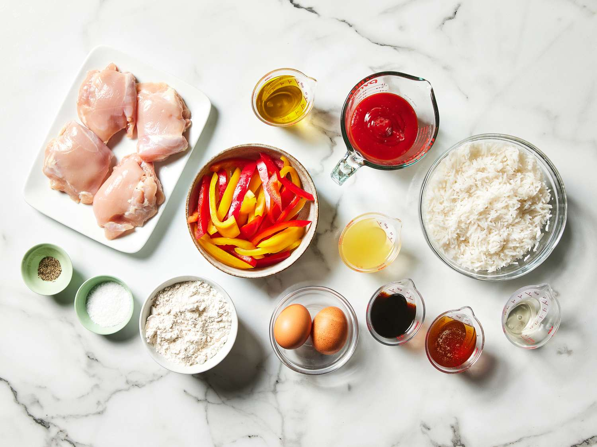
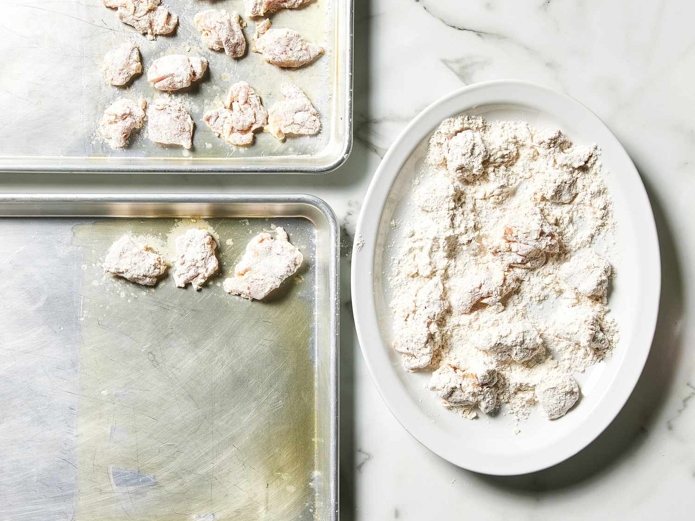
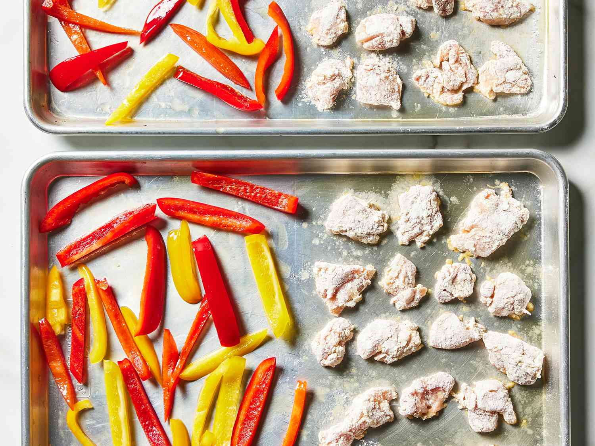
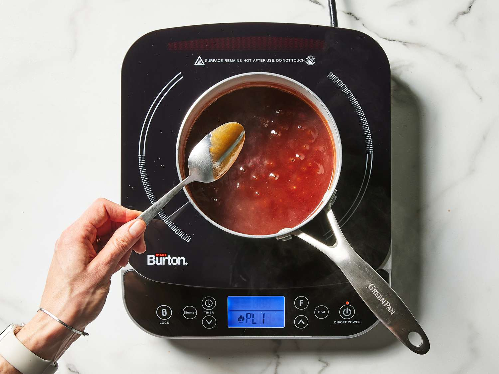
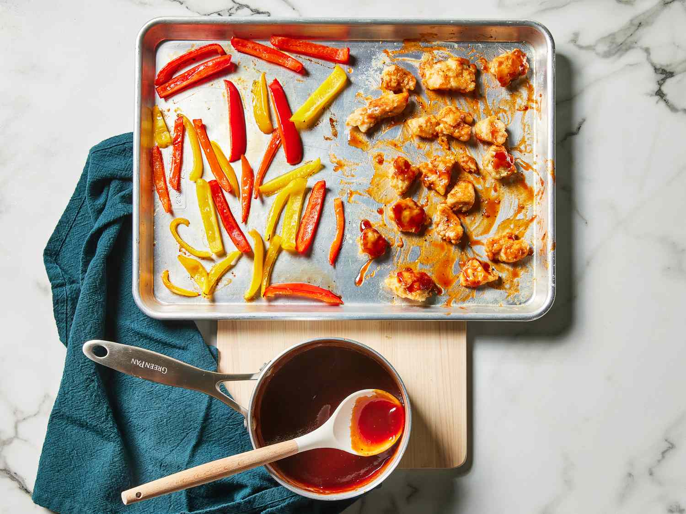

Ingredients
- 1/4 cup or 60 ml of olive oil, divided
- 4 (168 grams) boneless skinless chicken thighs, cut into 1 inch cubes
- 1/4 teaspoon of freshly ground black pepper
- 1 3/4 teaspoons of kosher salt
- 2 large eggs
- 1 cup all purpose flour
- 2 large multicolored bell peppers, sliced
- 1/2 cup ketchup
- 1/4 cup pineapple juice
- 1/4 cup honey
- 3 tablespoons soy sauce
- 1 tablespoon rice vinegar
- 3 cups cooked white rice
Directions
-

- Gather all ingredients. Preheat oven to 475 degrees F (245 degrees C) with racks in upper and lower third positions. Grease each of 2 baking sheets with 1 tablespoon of the oil along 1 of the short sides; set aside.
- Sprinkle chicken evenly with pepper and 1 1/2 teaspoons of the salt, and place in a bowl. Add eggs, and stir to coat. Place flour in a shallow bowl or baking dish. Working in batches, dredge chicken in flour, and shake off excess. Divide chicken between the prepared baking sheets, spreading in an even layer along short edges.
- Divide bell peppers among baking sheets, spreading evenly along other short edges. Drizzle bell peppers evenly with remaining 2 tablespoons oil, and toss gently to coat.
- Bake in the preheated oven, rotating baking sheets halfway through, until chicken is browned in spots, about 15 minutes. Remove chicken and bell peppers from the oven; use a spatula to carefully flip chicken only . Return to the oven, and continue baking at 475 degrees F (245 degrees C) until chicken is crispy and a thermometer inserted into thickest portion of chicken registers 165 degrees F (73 degrees C), about 5 minutes.
- While chicken is baking, whisk together ketchup, pineapple juice, honey, soy sauce, rice vinegar, and remaining 1/4 teaspoon salt in a small saucepan. Bring to a boil over medium, whisking occasionally. Reduce to a simmer over medium-low, and cook, stirring often, until mixture is reduced to 3/4 cup and coats back of spoon, about 5 minutes. Remove from heat.
- Pour 1/4 cup of the prepared sauce over chicken on the baking sheets; toss to coat evenly. Divide rice, chicken, and bell peppers evenly among bowls. Drizzle evenly with remaining 1/2 cup sauce. Serve immediately.



